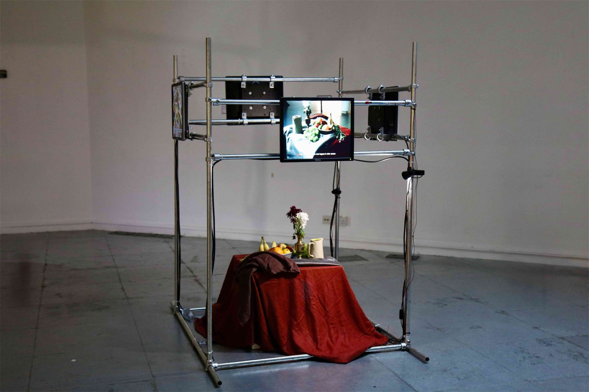
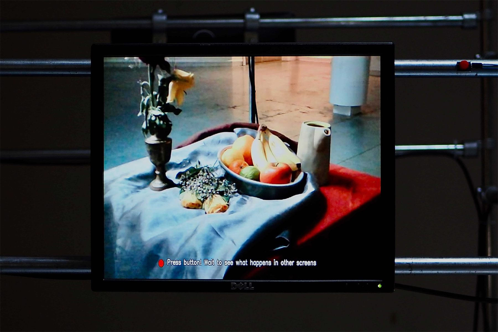
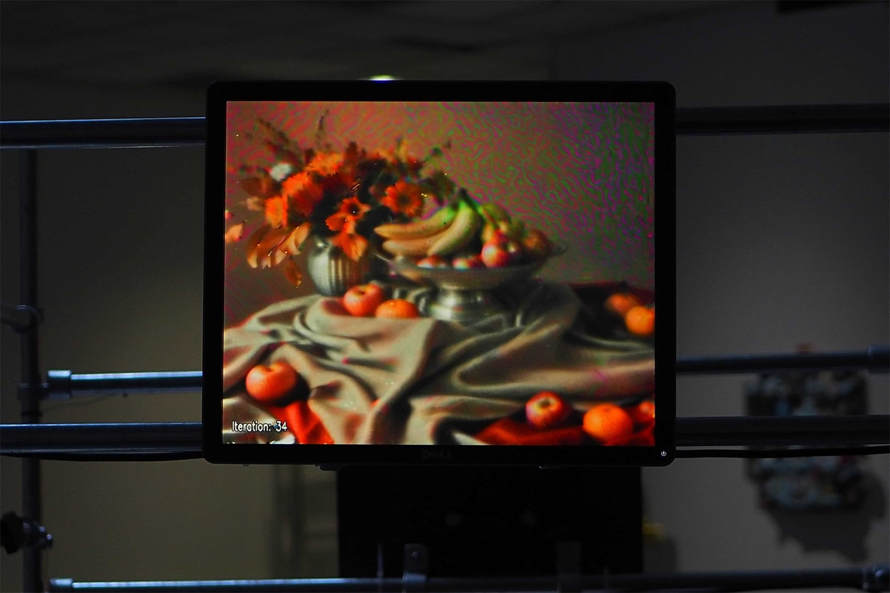
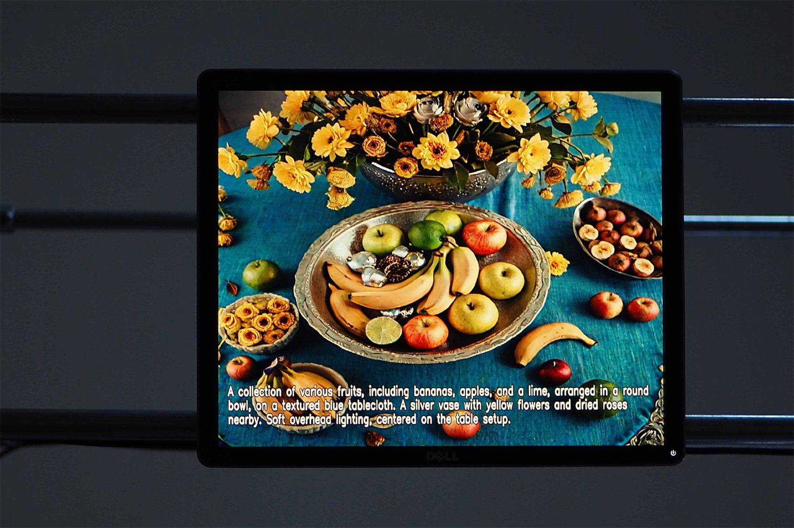
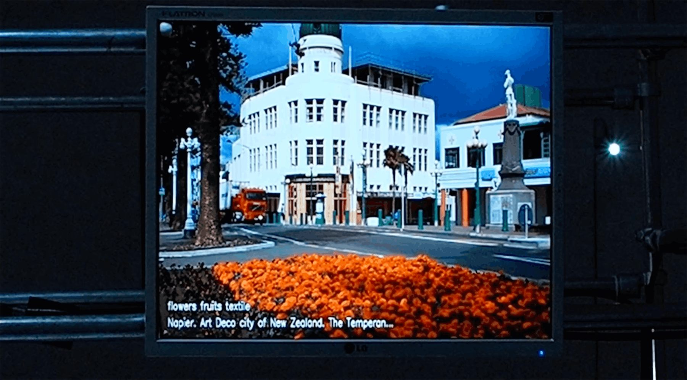
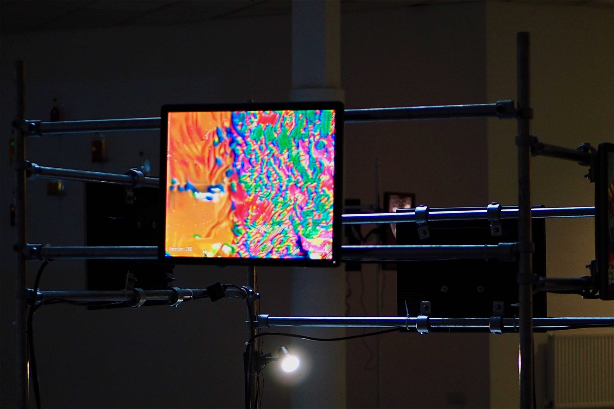

Jan 2026 · selected work
Master in Training

Master in Training is a four-screen still life setup that keeps translating itself. A simple staged scene is read by OpenAI vision model and turned into text, then that text becomes a new image through generative AI. The image is pushed again through the image-to-image process, letting the drift build with each pass. On the final screen, the system watches the latest output and tries to find a matching real photo online, as if the internet could confirm what is true.
The work comes from a personal habit of remembering through the cloud. Almost all of my photos have lived online, and to recall a moment, I often have to search for an image first. Master in Training sits inside that dependence and asks what it means when memory becomes retrieval, and when “mastery” shifts from the Renaissance idea of the master artist to the contemporary language of training datasets and models.
Seen on: CVPR 2026 shortlisted project
- Date
- Jan 2026
- Medium
- LCD screens, steel tubing, still life set-up
- Dimensions
- 100 × 100 × 170 cm
- Tags
- Installation, AI
ANNEX by the Koppel Project, Does Cloud Compute (ever) Precipitate? - Phreaking Collective, January 2026




